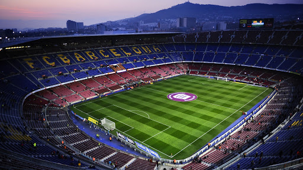
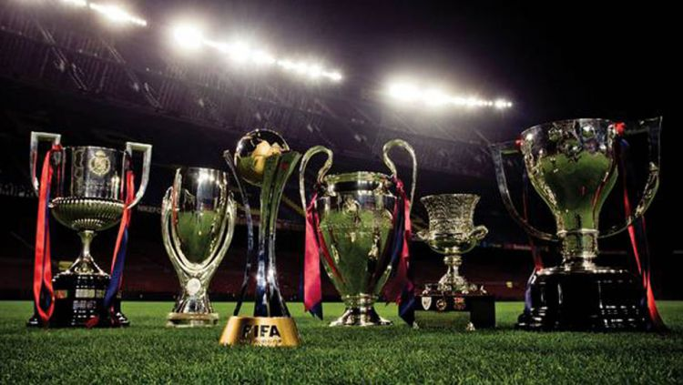
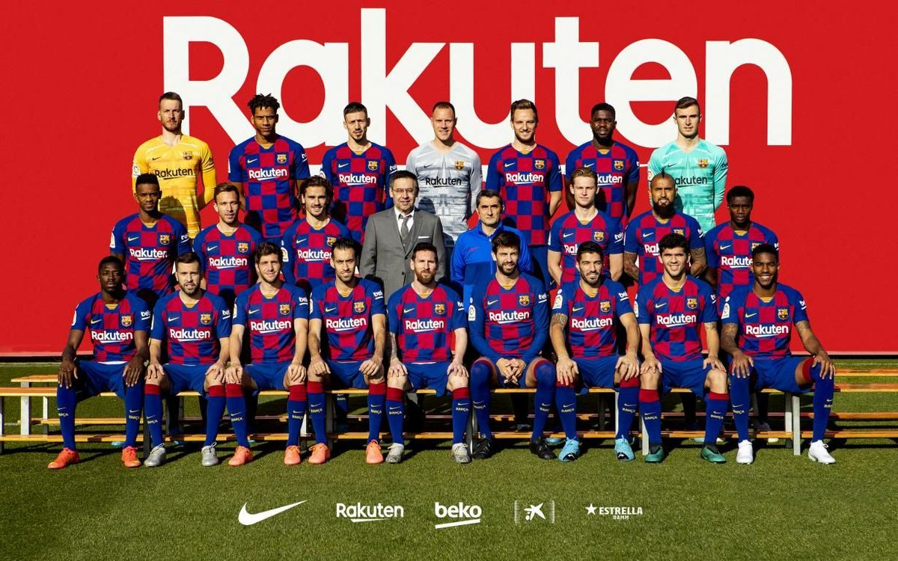
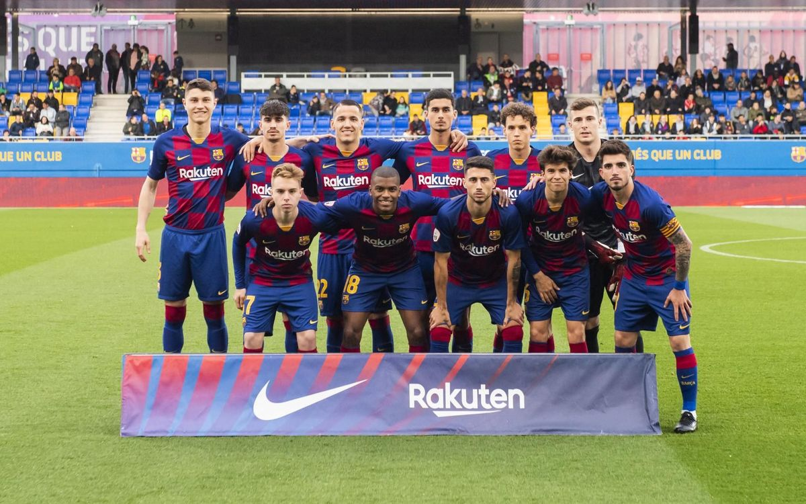
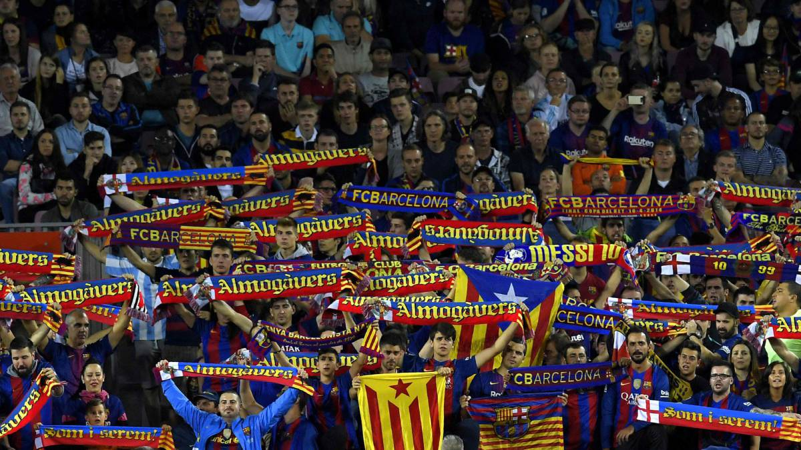

Sejarah

Fútbol Club Barcelona, juga dikenal sebagai Barcelona atau Barça,
adalah klub sepak bola profesional yang berbasis di Barcelona, Catalunya, Spanyol.
Didirikan pada tahun 1899 oleh sekelompok pemain Swiss, Inggris dan Catalan yang dipimpin oleh Joan Gamper,
klub telah menjadi simbol budaya Catalan dan Catalanisme, yang mempunyai motto "Més que un club" (Lebih dari sebuah klub).
Tidak seperti banyak klub sepak bola lainnya, para pendukung memiliki dan mengoperasikan Barcelona.
Ia adalah klub sepak bola kedua terkaya di dunia dalam hal pendapatan, dengan omset tahunan sebesar €560,8 juta dan kedua yang paling berharga, senilai $3,56 miliar.
Lagu kebangsaan resmi Barcelona adalah "Cant del Barça", yang ditulis oleh Jaume Picas dan Josep Maria Espinas.
Klub ini masuk menjadi peserta Primera División (Divisi Utama) sejak tahun 1928,
dan bersama-sama Real Madrid dan Athletic Bilbao menjadi tim yang tak pernah terdegradasi ke Segunda División (Divisi Dua).
Klub ini juga menjadi klub yang menjuarai liga Spanyol pertama kali. Dengan persembahan 23 gelar Liga Spanyol, 25 gelar Copa del Rey, 10 gelar Piala Super Spanyol, 5 gelar Liga Champions Eropa, 4 gelar Piala UEFA, 4 gelar Piala Super Eropa,
FC Barcelona menjadi salah satu tim tersukses di Spanyol, Eropa, dan dunia. Bukti paling nyata ketika pada tahun 2009
FC Barcelona berhasil menjadi klub Spanyol pertama yang berhasil meraih gelar Treble (juara La Liga, Copa del Rey, dan Liga Champions).
Dilanjutkan dengan raihan gelar Piala Super Spanyol, Piala Super Eropa dan Piala Dunia Antarklub FIFA untuk melengkapi raihan gelarnya menjadi Sextuples.
Barcelona merupakan klub sepak bola pertama di dunia yang melakukan raihan ini. Penggemar Barca juga sering disebut Culés.
Barcelona adalah salah satu tim yang paling didukung di dunia, dan memiliki media sosial terbesar
di antara tim olahraga lainnya. Pemain Barca telah memenangkan catatan jumlah penghargaan Ballon d'Or
(11), serta catatan jumlah penghargaan FIFA World Player of the Year (7). Pada tahun 2010, klub membuat
sejarah ketika tiga pemain yang datang melalui akademinya (Messi, Iniesta & Xavi) terpilih sebagai tiga pemain
terbaik di dunia, setelah mengantongi tempat teratas di FIFA Ballon d'Or, prestasi belum pernah terjadi
sebelumnya untuk pemain dari sekolah sepak bola yang sama.
Prestasi

Hingga saat ini, Barcelona telah memenangkan 26 La Liga, 30 Copa del Rey, 13 Supercopa de España,
3 Copa Eva Duarte dan 2 piala Copa de la Liga, serta menjadi pemegang rekor untuk empat kompetisi
terakhir. Juga mereka telah memenangkan 5 Liga Champions, 4 Piala Winners UEFA, 5 Piala Super
UEFA dan 3 Piala Dunia Antarklub FIFA. Mereka juga memenangkan rekor 3 Piala Inter-Cities Fairs,
dianggap pendahulu adalah Piala UEFA/Liga Eropa.
Barcelona adalah satu-satunya klub Eropa telah memainkan sepak bola kontinental setiap musim sejak 1955,
dan salah satu dari tiga klub tidak pernah terdegradasi dari La Liga, bersama dengan Athletic Bilbao dan Real Madrid.
Pada tahun 2009, Barcelona menjadi klub pertama di Spanyol untuk memenangkan treble terdiri dari La Liga, Copa del Rey, dan Liga Champions.
Pada tahun yang sama, juga menjadi klub sepak bola pertama yang memenangkan enam dari enam kompetisi dalam satu tahun, yaitu menyelesaikan sextuple itu, Terdiri dari treble tersebut dan Piala Super Spanyol, Piala Super UEFA dan Piala Dunia Antarklub FIFA.
Skuad
Berikut ini adalah daftar tim dan pemain yang bermain untuk FC Barcelona musim 2019/2020
Tim Utama

Goalkeeper :
- 1. Marc-Andre Ter Stegen (Jerman)
- 13. Murara Neto (Brazil)
Defender :
- 2. Nelson Semedo (Portugal)
- 3. Gerard Pique (Spanyol)
- 15. Clement Lenglet (Prancis)
- 18. Jordi Alba (Spanyol)
- 20. Sergi Roberto (Spanyol)
- 23. Samuel Umtiti (Prancis)
- 24. Junior Firpo (Spanyol)
Midfielder :
- 4. Ivan Rakitic (Kroasia)
- 5. Sergio Busquets (Spanyol)
- 8. Arthur Melo (Brazil)
- 21. Frankie de Jong (Belanda)
- 22. Arturo Vidal (Chile)
Forward :
- 9. Luis Suarez (Uruguay)
- 10. Lionel Messi (Argentina)
- 11. Ousmane Dembele (Prancis)
- 17. Antoine Griezmann (Prancis)
- 19. Martin Braithwaite (Denmark)
Pelatih : Quique Setien
Tim Barcelona B

Goalkeeper :
- 1. Sergi Puig
- 13. Carevic
- 25. Inaki
Defender :
- 2. Dani Morer
- 3. J. Cuenca
- 4. Mingueza
- 5. Guillem Jaime
- 15. Araujo
- 18. Sergio Akieme
- 21. chumi
Midfielder :
- 6. Riqui Puig (Spanyol)
- 7. Collado
- 8. Monchu
- 10. Labinot
- 14. Sarsanedas
- 16. Jandro Orellana
- 19. Matheus
- 20. Reis
Forward :
- 11. Kike
- 12. Hiroki Abe
- 22. R. Manaj
- 23. Ansu Fati
Pelatih : Garcia Pimienta
Pendukung

Julukan cules untuk pendukung Barcelona berasal dari kata cul catalan (bahasa Inggris: back/punggung),
Pada 1920-an, Barcelona belum memiliki stadion semegah Camp Nou.
Azulgrana memainkan setiap pertandingan kandangnya di stadion kecil yang tidak bisa menampung banyak suporter,
sehingga fans terpaksa duduk di tembok yang hanya setinggi sekira dua meter untuk menyaksikan laga.
Orang-orang yang melewati stadion kecil tersebut hanya bisa melihat bagian belakang fans Barcelona,
sehingga di situlah asal mula Cules berasal. Cules dalam bahasa catalan adalah punggung.
Sejak itu, nama Cules selalu melekat kepada para suporter Barcelona hingga kini. Mereka tidak terganggu dengan sebutan seperti itu.
Barcelona akhirnya membangun stadion yang lebih layak pada 1922 dengan nama Les Corts.
Meskipun begitu, sebutan Cules tetap tidak lepas dari fans Raksasa catalunya.
Pendukung Barcelona di Spanyol memiliki sekitar 25% dari populasi dikatakan sebagai Barca simpatisan, berada di bawah Real Madrid,
yang didukung oleh 32% dari populasi. Di Eropa Barcelona adalah klub favorit.
Jumlah keanggotaan klub ini telah melihat peningkatan yang signifikan dari 100.000 pada musim 2003-04 menjadi 170.000 pada bulan September 2009,
kenaikan tajam yang disebabkan oleh pengaruh Ronaldinho dan strategi media.
Selain keanggotaan, per Juni 2010 ada 1.335 klub penggemar resmi terdaftar, disebut penyes,
di seluruh dunia. Klub-klub penggemar mempromosikan Barcelona di wilayah mereka dan menerima penawaran bermanfaat ketika mengunjungi Barcelona.
Klub ini telah memiliki banyak orang terkemuka di antara para pendukungnya,
termasuk Paus Yohanes Paulus II, yang adalah anggota kehormatan,
dan mantan perdana menteri Spanyol José Luis Rodríguez Zapatero.
FC Barcelona memiliki rata-rata kehadiran penonton tertinggi di Eropa hanya kalah oleh Borussia Dortmund.